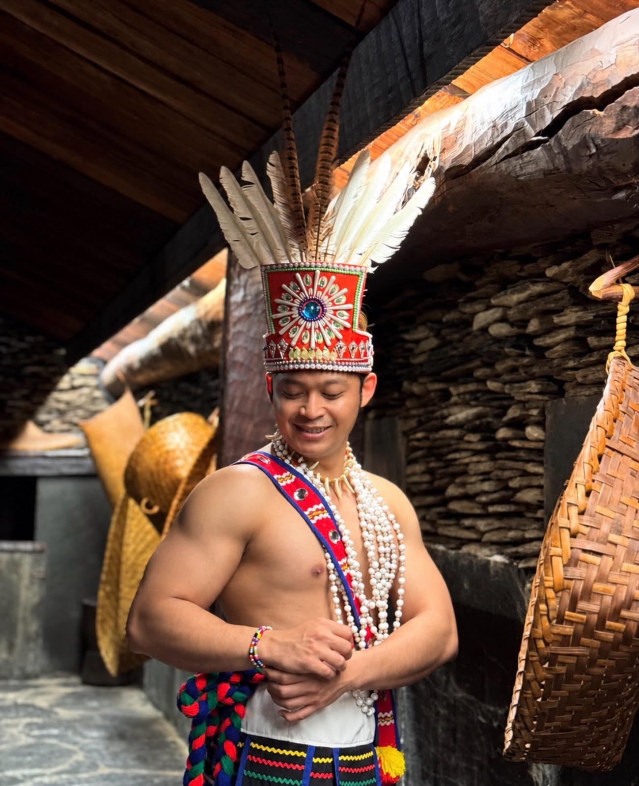

Name to be added
Ph.D. student. Research topic and short bio to be confirmed.
People
Meet the lab head and the students who make the work possible.

Lab head
Associate Professor (since Aug 2025; Assistant Professor 2023 to 2025), Department of Industrial Engineering and Management, Yuan Ze University
yogi.tri.prasetyo@saturn.yzu.edu.tw · Office 2715R · Ext. 2422
Placeholder cards. Names, photos and topics to be provided by the lab.
Ph.D. student. Research topic and short bio to be confirmed.
Ph.D. student. Research topic and short bio to be confirmed.
Placeholder cards. Names, photos and topics to be provided by the lab.
Master's student. Research topic and short bio to be confirmed.
Master's student. Research topic and short bio to be confirmed.
Master's student. Research topic and short bio to be confirmed.
Theses completed in the lab, listed with the academic year in the ROC calendar. Student names are shown as in the university record.
| Academic year (ROC) | Student | Thesis title | Published |
|---|---|---|---|
| 114 | 陳品樺 | 影響台灣年輕世代選民總統投票意向之因素探討 | 2026 |
| 113 | 蔡水盛 | Exploring the factors influencing the intention to revisit mount semeru after the 2022 volcanic eruption using machine learning techniques | 2024 |
| 113 | 宋麗君 | Factors Affecting Passenger Satisfaction towards Don Mueang Airport : An Integration of SERVQUAL and Expectation-Confirmation Theory | 2025 |
| 113 | 阿麥迪 | 研究影響民眾接受核電廠因素的架構 :以約旦為例 | 2025 |
| 113 | 周文玉 | 評估印尼 Info BMKG 行動應用程式之感知可用性 :結合防護動機理論、科技接受模型與系統可用性量表之綜合分析 | 2025 |
| 112 | 齊浩然 | Predicting Factors Influencing the Upselling Acceptance of Business Class Seats among Filipino Passengers: A Structural Equation Modelling-Neural Network Approach | 2024 |
| 112 | 納吉比 | Determining Factors Affecting the Intention to Utilize Cotton Bags in Somaliland : A Pro-Environmental Behavior Approach | 2024 |
Placeholder cards. Graduation year and current position to be provided by the lab.
Alumnus or alumna. Research topic and short bio to be confirmed.
Alumnus or alumna. Research topic and short bio to be confirmed.